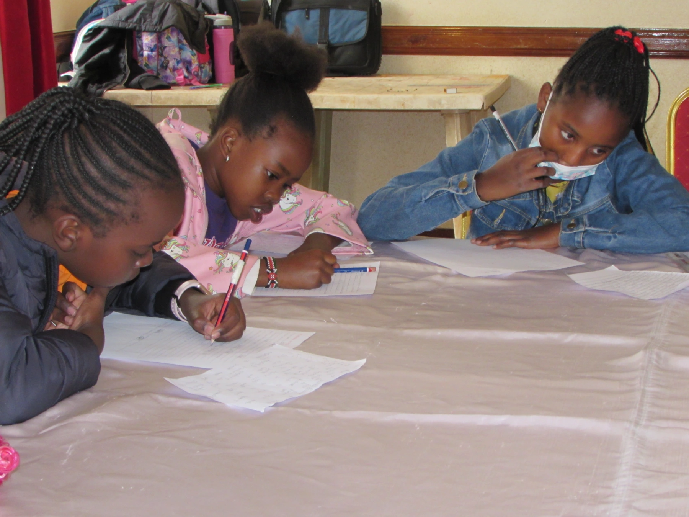

Question, who is …………(insert your name)? Are you beautiful, kind, daring, confident, funny, strong, friendly? Pause for a moment and think about this for a minute. You might be surprised with what you come up with.
Well, this Saturday, the Amazing Kids asked themselves this very question. Before sharing with everyone else about who they are, they sat down alone somewhere, collected themselves and their thoughts and wrote it all down on paper; a crucial step in self-reflection to make sure to leave no stone unturned.
I know you too want to know some of the things they wrote. So we asked each a pair of questions about themselves for them to answer and this is what they had to say.
Each one would start by introducing themselves and then answering the questions asked.
Starting us off; what is your favorite place on earth and why? And who is your favorite person in this whole world and why?
What are you most afraid of and why. And what's your favorite color?
Briefly tell us about your family and what your happiest memory is?
Tell us about your favorite color, food and then finish off by describing yourself in one word.
Finally, please share with us what you are afraid of and most importantly, one thing that you really like about yourself.
Since the day's theme was on self-reflection, the takeaway was that, by knowing yourself, you are then capable of setting yourself apart from the crowd. You are unique in your own way, embrace it! And remember 👇🏾